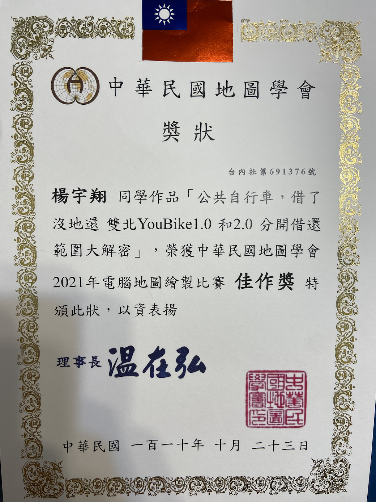

I joined Geographical Information Science Lab in the Department of Geography in National Taiwan University. My academic supervisor is Professor Tzai-Hung Wen, Ph.D.

我在疫情期間，為了增強免疫力，到空曠戶外運動 - 河濱夜騎單車。然而，一次，從臺北市跨區到新北市，youike2.0居然沒地還，於是我只好再回頭騎回臺北市還車。此地圖呈現臺北市和新北市，雙北市「公共自行車」的站點分佈，服務範圍，以及每個鄉鎮市層級行政區所擁有的公共自行車站點數量。近年來公共自行車推出2.0，而且不能和1.0 的站點租借、歸還 混用，導致日常生活節能減碳的環保通勤時，遇到許多困擾，因此選擇這個主題，一目瞭然呈現兩個系統的租借範圍。
儘管資料處理上會較為複雜，我仍合併考慮臺北市和新北市，因為雙北為一日生活圈，每日通勤都可能會跨縣市移動，因此在考慮公共自行車議題是，需要合併考量。 我將估共自行車分為兩個顏色，紅色為2.0，白色為1.0。圓圈大小，使用每個站點的腳踏車輛總數，代表站點的規模大小。並且使用凸殼（convex hull）的演算法，去算出站點的不規則形狀服務範圍，最後計算每個鄉鎮市層級區域擁有的youbike站點數，雙北第一名的區域為臺北市士林區，105個站點（youbike1.0 + 2.0）
2021 Mapp Contest, Excellence Award, Public bicycles, no place to return them after borrowing, YANG YU HSIANG

I joined Geographical Information Science Lab in the Department of Geography in National Taiwan University. My academic supervisor is Professor Tzai-Hung Wen, Ph.D.
Any cooperation or suggestion is welcome to me. E-mail is on school system. Phonenumer and the Address is Geography Department of National Taiwan University
Since 7,August 2019 (Wed)